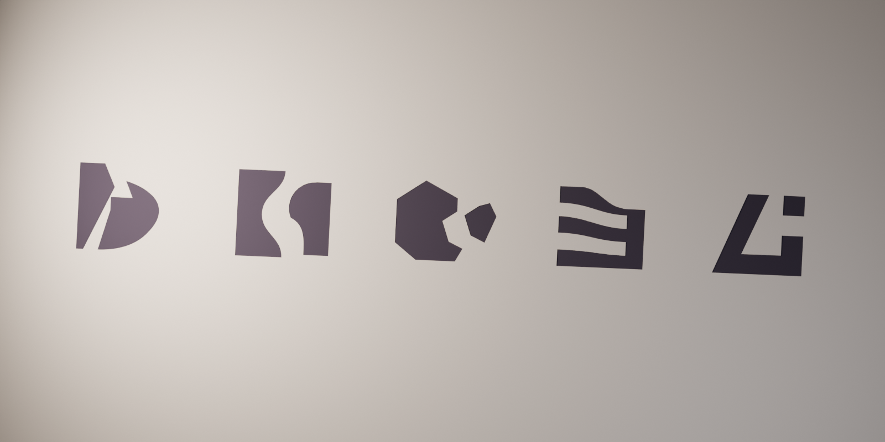
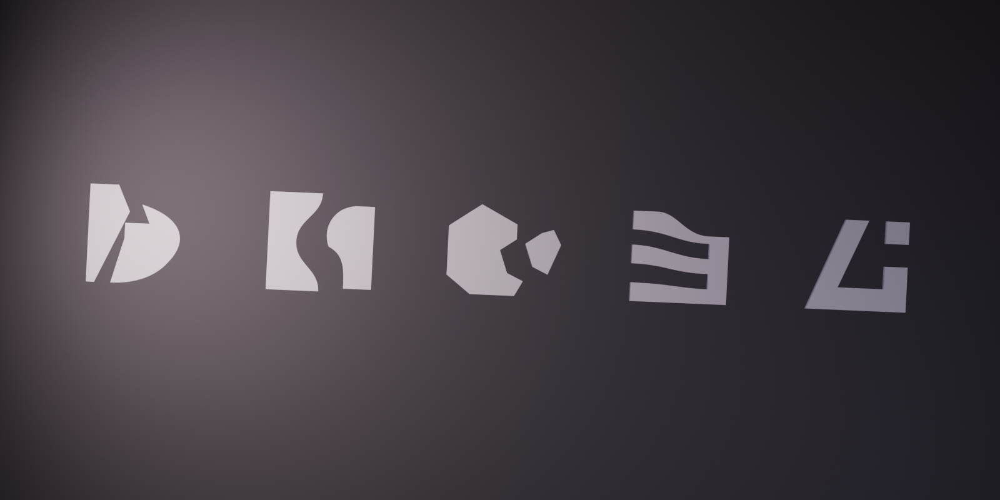
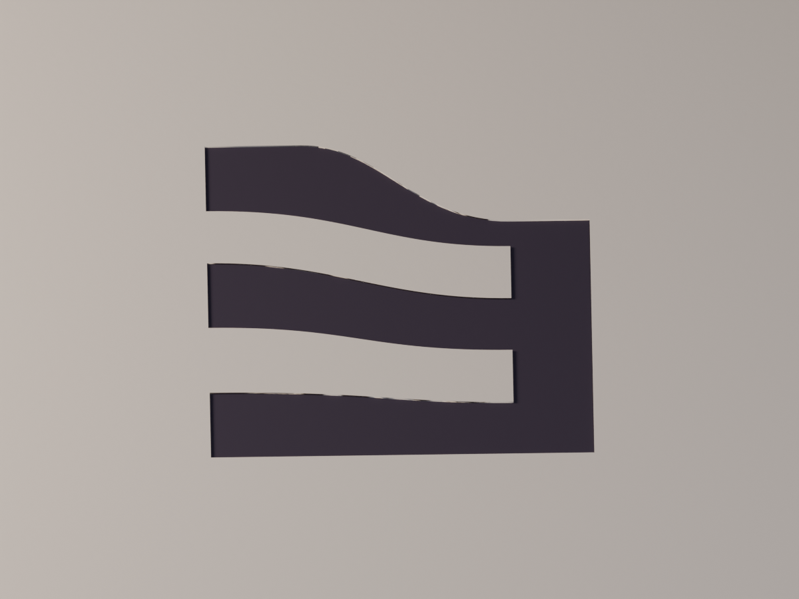

O mesmo corte, outra escala
Os contornos compactos tornam-se incisões de 0,4 mm numa superfície procedural. Esta cena Blender foi criada do zero; os estudos não são carregados pelo produto.
Uma assinatura por família.

Argos · Sócrates · Perseu · Ariadne · Hefesto. Fonte geométrica: selected-masters.json. Mesma ordem da folha de redução.

Inspeção do corte.

Render de câmera macro da própria cena, sem pós-produção raster. Método e medidas · Script Blender